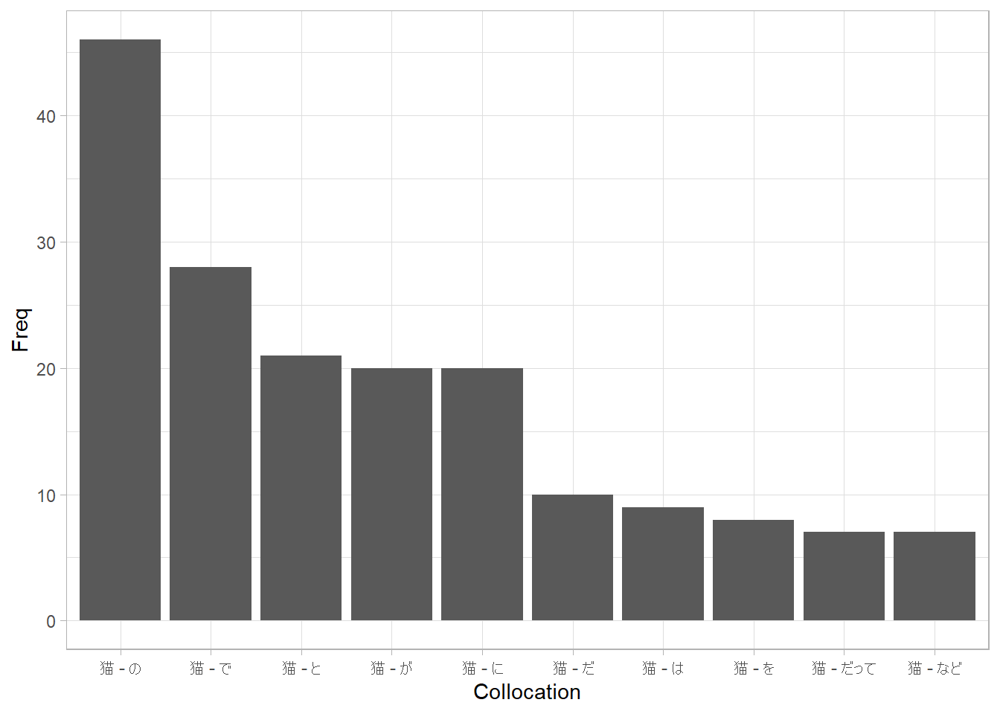
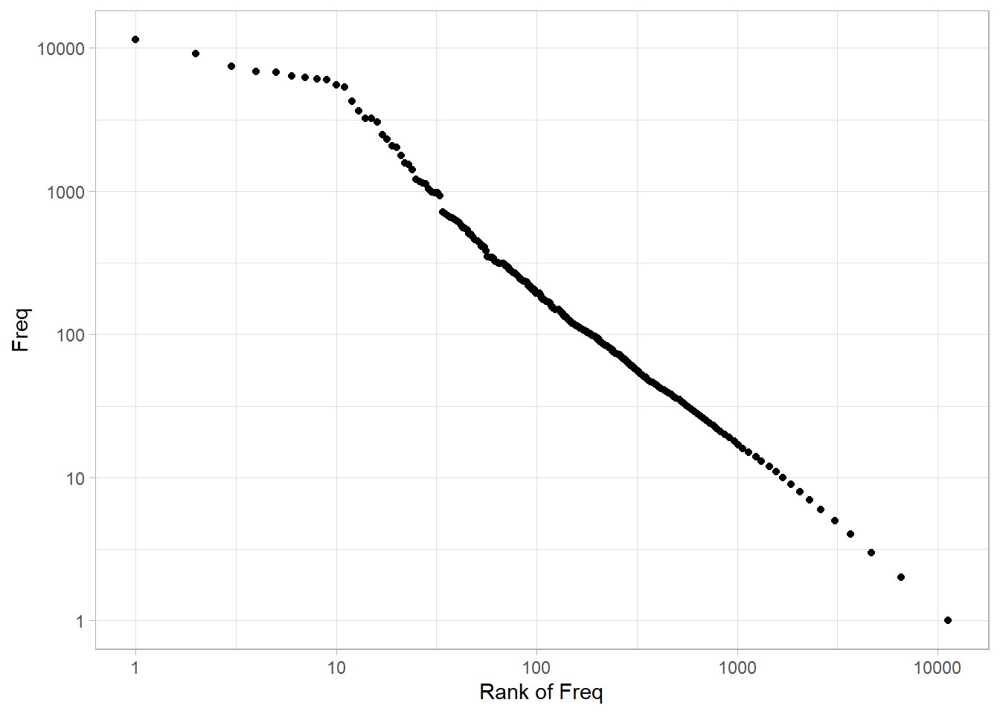

Chapter 3 形態素解析
3.1 データの読み込み
readtextで読みこんでおきます。
temp <- tempfile(fileext = ".txt")
download.file("https://nlp100.github.io/data/neko.txt", temp)
neko <- readtext::readtext(temp, encoding = "UTF-8")
neko$text[1] %>%
readr::read_lines(skip_empty_rows = TRUE) %>%
length()#> [1] 92103.2 形態素解析
3.2.1 30. 形態素解析結果の読み込み
RMeCabは必要な情報を取りづらいので、paithiov909/RcppKagomeを使います。RcppMeCabでもできますが、公式のリポジトリのソースはWindows環境だとビルドにコケるのでUNIX系の環境が必要です（2021年1月現在）。
すべて解析すると時間がかかるのでここでは一部だけ使います。
neko_txt_mecab <- neko %>%
dplyr::slice(1:1000) %>%
dplyr::pull("text") %>%
RcppKagome::kagome() %>%
RcppKagome::prettify()
head(neko_txt_mecab)#> Sid Surface POS1 POS2 POS3 POS4 X5StageUse1 X5StageUse2 Original Yomi1
#> 1 1 一 名詞 数 <NA> <NA> <NA> <NA> 一 イチ
#> 2 1 \n\n 記号 空白 <NA> <NA> <NA> <NA> <NA> <NA>
#> 3 1 記号 空白 <NA> <NA> <NA> <NA>
#> 4 1 吾輩 名詞 代名詞 一般 <NA> <NA> <NA> 吾輩 ワガハイ
#> 5 1 は 助詞 係助詞 <NA> <NA> <NA> <NA> は ハ
#> 6 1 猫 名詞 一般 <NA> <NA> <NA> <NA> 猫 ネコ
#> Yomi2
#> 1 イチ
#> 2 <NA>
#> 3
#> 4 ワガハイ
#> 5 ワ
#> 6 ネコ3.2.2 31. 動詞
#> Surface
#> 1 生れ
#> 2 つか
#> 3 し
#> 4 泣い
#> 5 し
#> 6 いる3.2.3 32. 動詞の原形
#> Original
#> 1 生れる
#> 2 つく
#> 3 する
#> 4 泣く
#> 5 する
#> 6 いる3.2.4 33. 「AのB」
neko_txt_mecab %>%
tibble::rowid_to_column() %>%
dplyr::filter(Surface == "の") %>%
dplyr::pull(rowid) %>%
purrr::keep(~ neko_txt_mecab$POS1[. - 1] == "名詞" && neko_txt_mecab$POS1[. + 1] == "名詞") %>%
purrr::map_chr(~ stringr::str_c(
neko_txt_mecab$Surface[. - 1],
neko_txt_mecab$Surface[.],
neko_txt_mecab$Surface[. + 1],
collapse = ""
)) %>%
head(30L)#> [1] "彼の掌" "掌の上" "書生の顔" "はずの顔" "顔の真中" "穴の中"
#> [7] "書生の掌" "掌の裏" "何の事" "肝心の母親" "藁の上" "笹原の中"
#> [13] "池の前" "池の上" "一樹の蔭" "垣根の穴" "隣家の三" "時の通路"
#> [19] "一刻の猶予" "家の内" "彼の書生" "以外の人間" "前の書生" "おさんの隙"
#> [25] "おさんの三" "胸の痞" "家の主人" "主人の方" "鼻の下" "吾輩の顔"3.2.5 34. 名詞の連接
これよくわからない。探索する処理が重いのでdplyr::sample_fracでサンプルを減らしています。
idx <- neko_txt_mecab %>%
tibble::rowid_to_column() %>%
dplyr::filter(POS1 == "名詞") %>%
dplyr::sample_frac(0.1) %>%
dplyr::pull(rowid) %>%
purrr::discard(~ neko_txt_mecab$POS1[. + 1] != "名詞")
search_in <- idx
purrr::map_chr(search_in, function(idx) {
itr <- idx
res <- stringr::str_c(neko_txt_mecab$Surface[idx])
while (neko_txt_mecab$POS1[itr + 1] == "名詞") {
res <- stringr::str_c(res, neko_txt_mecab$Surface[itr + 1])
search_in <<- purrr::discard(search_in, ~ . == itr + 1)
itr <- itr + 1
next
}
return(res)
}) %>%
head(30L)#> [1] "普通の" "時姉" "油壺" "主人自ら" "招魂社" "安心さ" "退屈そう"
#> [8] "枚かけ" "大変尊敬" "極楽主義" "三口半" "寒月君" "所謂通人" "一人"
#> [15] "迷亭君" "寒月君" "石地蔵" "先刻一" "臥竜窟" "台馳" "種以外"
#> [22] "先生方" "ようす" "年漬" "自殺者" "沙弥君" "仙君" "三冊"
#> [29] "女さ" "三女子"3.2.6 35. 単語の出現頻度
#> # A tibble: 6 x 2
#> # Groups: Original [6]
#> Original n
#> <chr> <int>
#> 1 <NA> 11450
#> 2 の 9194
#> 3 。 7486
#> 4 て 6848
#> 5 、 6773
#> 6 は 64213.2.7 36. 頻度上位10語
neko_txt_mecab %>%
dplyr::group_by(Original) %>%
dplyr::count(Original, sort = TRUE) %>%
head(10) %>%
ggplot(aes(x = reorder(Original, -n), y = n)) +
geom_col() +
labs(x = "Surface form") +
theme_light()
3.2.8 37. 「猫」と共起頻度の高い上位10語
解釈のしかたが複数あるけれど、ここではbi-gramを数えてお茶をにごします。
neko_txt_mecab %>%
tibble::rowid_to_column() %>%
dplyr::filter(Surface == "猫") %>%
dplyr::mutate(Collocation = stringr::str_c(Surface, neko_txt_mecab$Surface[rowid + 1], sep = " - ")) %>%
dplyr::group_by(Sid, Collocation) %>%
dplyr::count(Collocation, sort = TRUE) %>%
head(10L) %>%
ggplot2::ggplot(aes(x = reorder(Collocation, -n), y = n)) +
ggplot2::geom_col() +
ggplot2::labs(x = "Collocation", y = "Freq") +
ggplot2::theme_light()
3.2.9 38. ヒストグラム
neko_txt_mecab %>%
dplyr::group_by(Original) %>%
dplyr::count(Original) %>%
ggplot2::ggplot(aes(x = reorder(Original, -n), y = n)) +
ggplot2::geom_col() +
ggplot2::labs(x = "", y = "Freq") +
ggplot2::scale_y_log10() +
ggplot2::theme_light()
3.2.10 39. Zipfの法則
count <- neko_txt_mecab %>%
dplyr::group_by(Original) %>%
dplyr::count(Original) %>%
dplyr::ungroup()
count %>%
tibble::rowid_to_column() %>%
dplyr::mutate(rank = nrow(count) + 1 - dplyr::min_rank(count$n)[rowid]) %>%
ggplot2::ggplot(aes(x = rank, y = n)) +
ggplot2::geom_point() +
ggplot2::labs(x = "Rank of Freq", y = "Freq") +
ggplot2::scale_x_log10() +
ggplot2::scale_y_log10() +
ggplot2::theme_light()